Generated with Gemini image model. Click images to open full size.
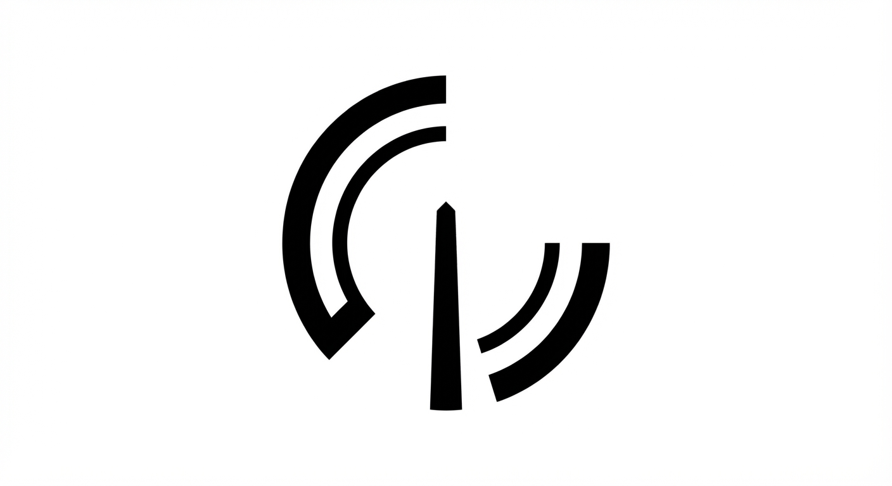01_signal_beacon
Design a logo symbol of a single vertical beacon with two asymmetric radiating arcs. The beacon should feel precise and confident, not telecom-cliche. Prioritize a unique silhouette that reads instantly at app-icon size.
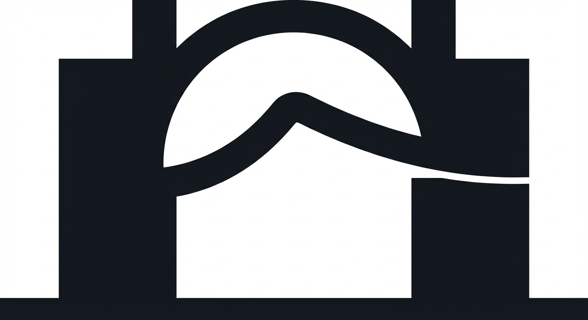02_bridge_span
Create a minimal symbol with two grounded pillars connected by one elegant suspended span, representing trusted connection between people. Keep geometry bold and ownable with one dominant contour.
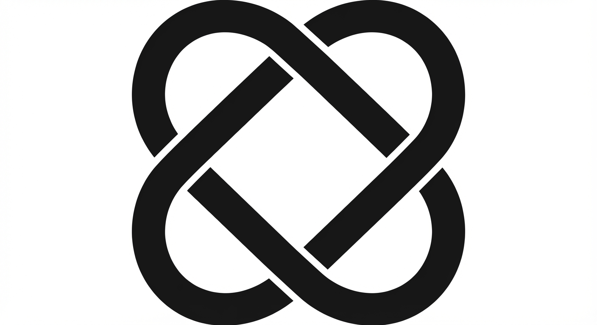03_trust_knot
Design a simple interlocking knot symbol made from two continuous bands, suggesting mutual trust and reciprocity. Avoid Celtic ornamentation; keep it modern, geometric, and scalable.
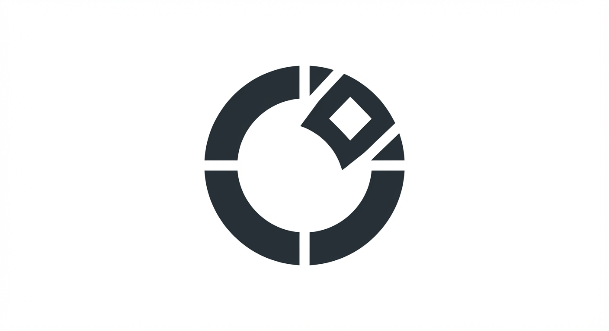04_open_aperture
Create an abstract aperture symbol: a near-closed geometric ring with one deliberate opening that suggests selective visibility and clarity. The opening should be the memorable signature.
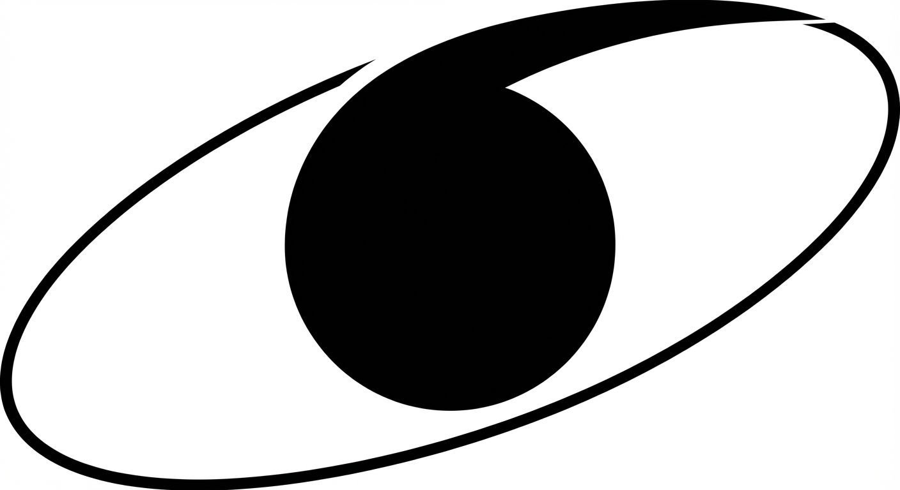05_orbit_pivot
Design a symbol with a stable core and one orbit line that pivots off-axis to imply intelligence and dynamic relationship structure. Keep components minimal and non-astronomy-cliche.
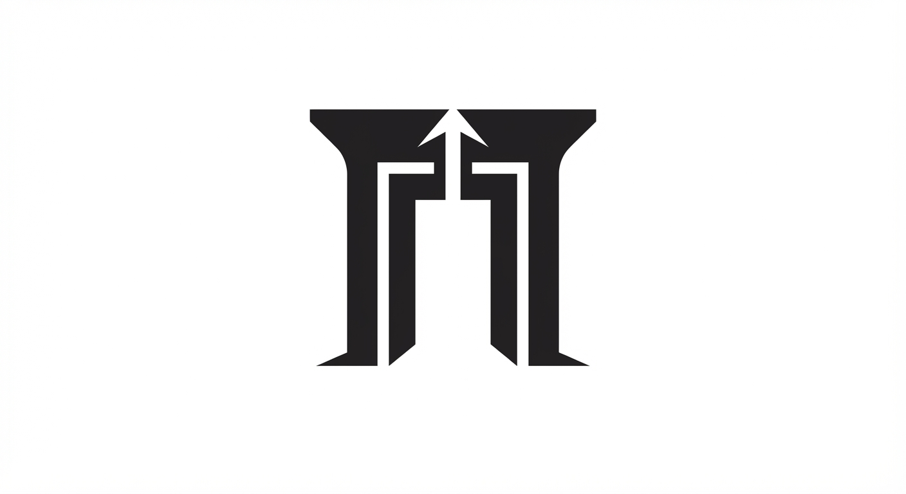06_compass_gate
Create a mark that combines an open gate silhouette with a subtle directional cue, suggesting guided access and trustworthy navigation. Keep it abstract and premium, not literal map iconography.
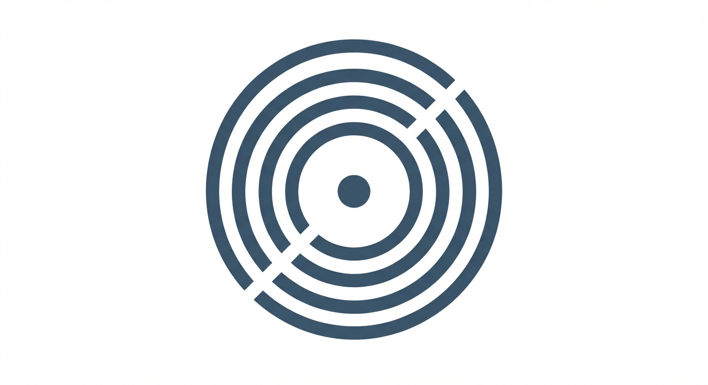07_echo_seal
Design a circular seal-like symbol with concentric echo bands and one intentional break. It should feel like a modern verification stamp, calm and authoritative.
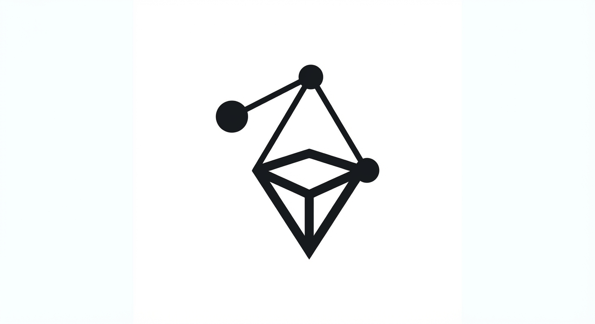08_anchor_constellation
Create a sparse 3-node constellation anchored by one grounded base shape, representing relationship topology with stability. Avoid generic network-diagram visuals.
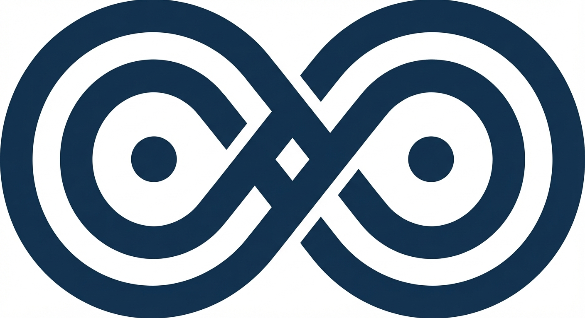09_thread_path
Design a single-thread path symbol weaving through two fixed points, representing long-term relationship continuity. Keep the path thick and legible at tiny sizes.
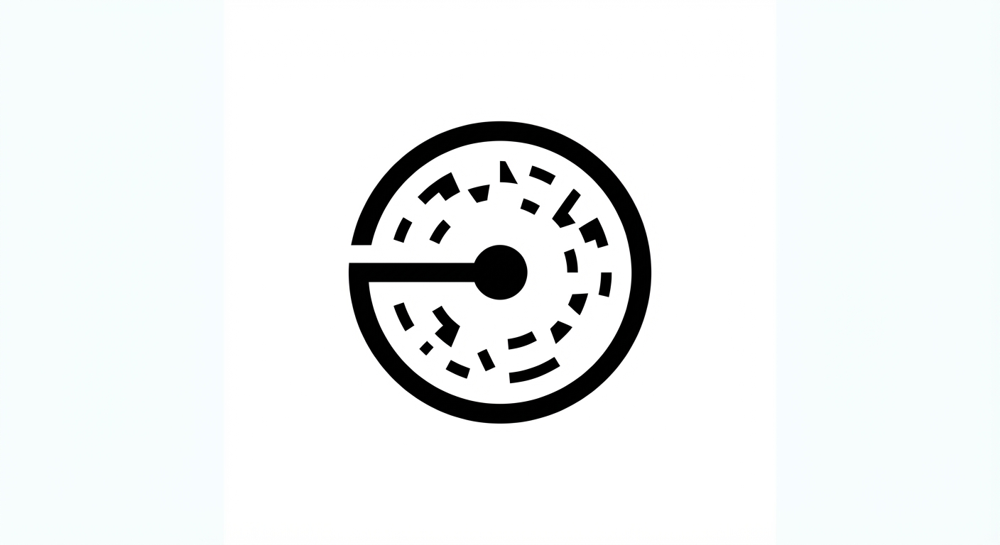10_lens_portal
Create a portal-like circular symbol with one focused center point and one outer interruption, conveying clear insight into signal vs noise. Keep form minimal and iconic.
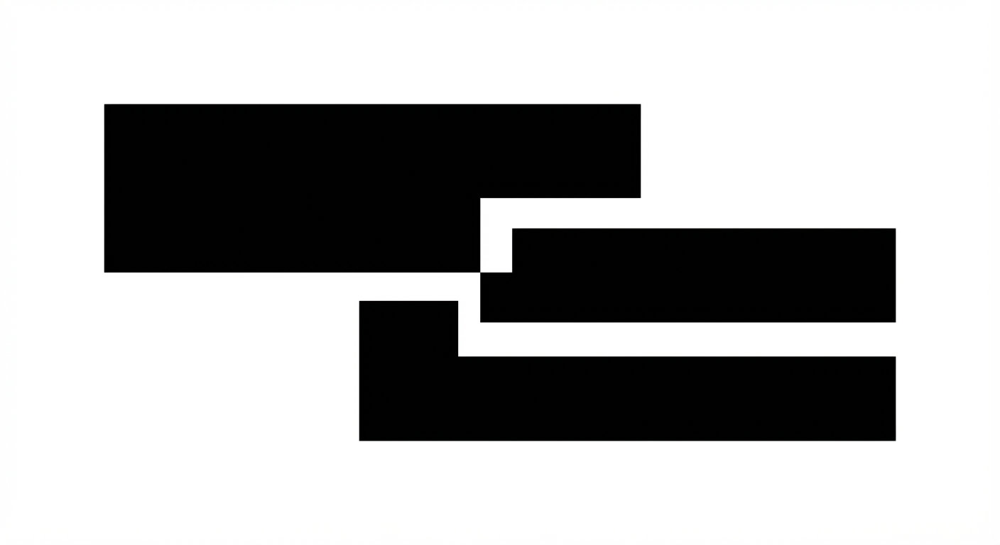11_split_horizon
Design a symbol built from two horizontal masses with one precise offset join, expressing bridge-building across distance. The offset should become the recognisable brand move.
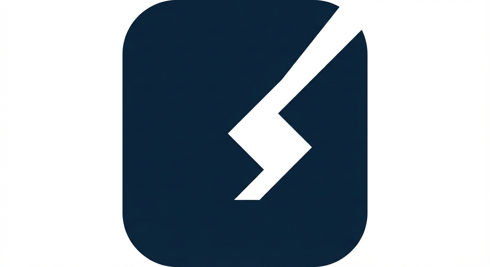12_monolith_cut
Create an app-icon-first monolith symbol: a solid rounded form carved by one clean geometric cut. The cut should imply both connection and clarity without resembling any letter.